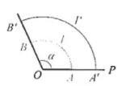
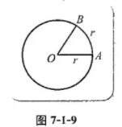
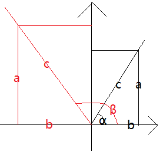
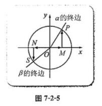
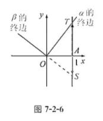
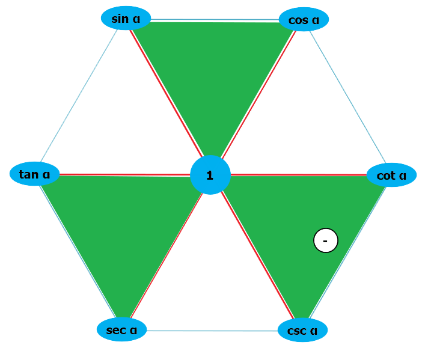

第七章 三角函数
7.1 任意角的概念与弧度制
7.1.1 角的推广
1.角的概念的推广
角的概念的推广: 一条射线绕其端点旋转到另一条射线所形成的图形称为角, 这两条射线分别称为角的始边和终边.
射线的旋转有两个相反的方向: 顺时针方向和逆时针方向. 习惯上规定, 按照逆时针方向旋转而成的角称为正角;
按照顺时针方向旋转而成的角称为负角; 当射线没有旋转时, 我们也把它看成一个角, 称为零角.
这样定义的角,由于是旋转生成的, 所以也常称为转角.
值得注意的是, 上述角的定义中, 当射线绕其端点按逆时针方向或按顺时针方向旋转时, 旋转的绝对量可以是任意的.
因此, 角的概念经过以上的推广以后, 就包括正角、负角、零角.也就是说, 角的大小是任意的.
由此, 我们把角的概念推广到了任意角.
2.象限角
右上角是第1象限, 左上角是第2象限, 左下角是第3象限, 右下角是第4象限.
7.1.2 弧度制及其与角度制的换算
1.弧度制
角除了使用
角度来度量外, 还可以使用
弧度来度量.
角度制: 使用角度来度量角时, 是把圆周等分成360份, 其中每一份所对应的圆心角为1度, 这种用度作单位来度量角的制度称为角度制.
角度制还规定1度等于60分, 1分等于60秒, 即
1°=60′, 1′=60″
弧度制:

图片来源
${弧的长度 \over 弧的半径} =$ ${\begin{matrix}
⌒\\
{AB}\\
\end{matrix} \over OA}
=
{\begin{matrix}
⌒\\
{A′B′}\\
\end{matrix} \over OA′}
$ =
弧度数(定值)
设弧的角度 $\alpha$ = n°, 弧长l, 半径r:
${l \over r}$ = ${2 \pi r} \ * \ n \over 360 \ * \ r$
= $n {2\pi \over
360}$
我们称弧长与半径比值的这个常数为圆心角的
弧度数.
长度等于半径长的圆弧所对的圆心角为
1弧度的角, 记作
1rad.
如图7-1-9所示, 因为∠AOB 就是1弧度的角.

图片来源
弧度制:这样规定出来的1弧度的角大小是完全确定的, 这种以弧度为单位来度量角的制度称为弧度制.
1rad = $360 * r \over 2 \pi r$ = $180 \over \pi$ ≈ 57.29578°
2.弧度制与角度制的换算
因为半径为r的圆周长为 $2\pi r$, 所以周角的弧度数是$2\pi r \over r$=$2\pi$, 于是$360° = 2\pi \ rad$, 因此$180° = \pi \
rad$.
由此容易得到弧度制与角度制的换算公式:
设一个角的角度数为n, 弧度数为a, 则
∵ 一个圆的弧度数 = $2 \pi \ rad$
∴ ${n \over 360} = {a \over 2\pi}$
⇒ ${n \over 180} = {a \over \pi}$
因此, 0 rad角就是0°角, 它的终边在x轴的正半轴上;
${\pi \over 2} rad$ 角就是90°角, 它的终边在y轴的正半轴上;
$\pi \ rad$ 角就是180角, 它的终边在x轴的负半轴上;
${3 \pi \over 2} rad$ 角就是270角, 它的终边在y轴的负半轴上.
3.用信息技术进行弧度制与角度制的换算
7.2 任意角的三角函数
7.2.1 三角函数的定义
1.任意角的正弦, 余弦与正切的定义

参考视频
$sin α = {a \over c}$
$cos α = {b \over c}$
$tan α = {a \over b}$
$sin β = sin(180° - β) = {a \over c}$
$cos β = cos(180° - β) = {b \over c}$
$tan β = tan(180° - β) = {a \over b}$
2.正弦, 余弦与正切在各象限的符号
sin x: 1,2 象限值>0, 正. 3,4象限 负
cos x: 1,4 象限值>0, 正. 2,3象限 负
tan x: 1,3 象限值>0, 正. 2,4象限 负
7.2.2 单位圆与三角函数线
1.正弦线与余弦线

图片来源
设圆的半径 = 1:
sin $\alpha$ = $\overrightarrow {MP} \over 1$ = $\overrightarrow {MP}$
cos $\alpha$ = $\overrightarrow {OM} \over 1$ = $\overrightarrow {OM}$
$\overrightarrow {OM}$ 为角 $\alpha$ 的
余弦线.
$\overrightarrow {MP}$ 为角 $\alpha$ 的
正弦线.
2.正切线

图片来源
设 OA = 1:
tan $\alpha$ = $\overrightarrow {AT} \over OA$ = $\overrightarrow {AT}$
tan $\beta$ = $\overrightarrow {AS} \over OA$ = $\overrightarrow {AS}$
$\overrightarrow {AT}$ 为角 $\alpha$ 的
正切线.
$\overrightarrow {AS}$ 为角 $\beta$ 的
正切线.
7.2.3 同角三角函数的基本关系式
$sin \alpha = {x \over z}$, $cos \alpha = {y \over z}$, $tan \alpha = {x \over y}$
⇒
$sin^2 \alpha + cos^2 \alpha = 1$
⇒
$tan \alpha = {sin \ \alpha \over cos \ \alpha}$
$cot \alpha = {1 \over tan \ \alpha}$
$sec \alpha = {1 \over cos \ \alpha}$
$csc \alpha = {1 \over sin \ \alpha}$
$tan ^2 \alpha + 1$$ = {sin ^2 \alpha \over cos ^2 \ \alpha} + 1 = {{sin ^2 \alpha + cos ^2
\alpha} \over cos ^2 \alpha} = {1 \over cos ^2 \alpha}$
= ${sec ^2 \alpha}$
⇒
$cot ^2 \alpha + 1 = {csc ^2 \ \alpha}$

- 同一条红线相乘 = 1
sin α . csc α = 1
cos α . sec α = 1
tan α . cot α = 1
-
绿色倒三角 "▼" 的顶部平方和 = 底部²
sin²α + cos²α = 1²
tan²α + 1² = sec²α
1² + cot²α = csc²α
-
一个顶点 = 它顺(逆)时针的下1个顶点 ÷ 顺(逆)时针第2个顶点
3.1.🔃顺时针
sin α = cos α ÷ cot α
cos α = cot α ÷ csc α
cot α = csc α ÷ sec α
csc α = sec α ÷ tan α
sec α = tan α ÷ sin α
tan α = sin α ÷ cos α
3.2.🔄逆时针
sin α = tan α ÷ sec α
tan α = sec α ÷ csc α
sec α = csc α ÷ cot α
csc α = cot α ÷ cos α
cot α = cos α ÷ sin α
cos α = sin α ÷ tan α
百度扩展资料
$tan A + tan B + tan C = tan A.tan B.tan C$
证明:
$\begin{align}
tan A + tan B & = tan(A + B) (1 - tan A.tan B) \\
& = tan(\pi - C) (1 - tanA . tan B) \\
& = - tan C (1 - tanA . tan B) \\
& = tan A . tan B . tan C - tanC
\end{align}$
$∴ tan A + tan B + tan C = tanA.tan B.tan C$
7.2.4 诱导公式
1.角$\alpha$与$\alpha + k * 2 \pi$(k∈Z)的三角函数值之间的关系
在初中,我们已经知道一些锐角的三角函数值及它们之间的一些关系, 例如,
sin30° = cos60° = $1 \over 2$,
sin45° = $\sqrt 2 \over 2$,
sin60° = cos30° = $\sqrt 3 \over 2$
sin(α + k·2π) = sina α
cos(α + k·2π) = cosa α
tan(α + k·2π) = tana α
2.角的旋转对称
3.角α与-α的三角函数值之间的关系
sin (-α) = - sin α
cos α = - cos α
tan (-α) = - tan α
4.角α与π±α的三角函数值之间的关系
sin (π-α) = sin α
cos (π-α) = - cos α
tan (π-α) = - tan α
sin (π+α) = - sin α
cos (π+α) = - cos α
tan (π+α) = tan α
5.角α与$π \over 2$-α的三角函数值之间的关系
sin ($π \over 2$-α) = cos α
cos ($π \over 2$-α) = sin α
tan ($π \over 2$-α) = cot α
cot ($π \over 2$-α) = tan α
6.其它一些三角函数值之间的关系
sin ($π \over 2$+α) = cos α
cos ($π \over 2$+α) = - sin α
tan ($π \over 2$+α) = - cot α
cot ($π \over 2$+α) = - tan α
...
7.3 三角函数的性质与图像
7.3.1 正弦函数的性质与图像
1.正弦函数的性质
1.定义域与值域: 定义域 ∈ R, 值域[-1, 1]
2.奇函数: 关于原点对称
3.周期性: sin(x + k.2π) = sin x (k ∈ z)
4.单调性: 在某个区间递增/递减.
5.正弦函数的零点: y = sin x 的零点为kπ (k ∈ z)
2.正弦函数的图像(x轴的单位是幅度: rad)
3.用信息技术作正弦曲线
7.3.2 正弦型函数的性质与图像
y = Asin(ωx + ϕ) (A ≠ 0, ω ≠ 0) 的定义域为R:
值域: [-|A|, |A|]
周期: $2π \over |ω|$
像左位移: $ϕ \over ω$ (结果>0: 左移. 结果<0: 右移)
如下图1, 分别是以下4个正弦函数:
y = sin x
y = sin 2x
y = 3sin 2x
y = 3sin (2x + $\pi \over 3$)
7.3.3 余弦函数的性质与图修
1.余弦函数的性质
1.定义域与值域: 定义域 ∈ R, 值域[-1, 1]
2.偶函数: 关于Y轴对称
3.周期性: cos(x + k.2π) = cos x (k ∈ z)
4.单调性: 在某个区间递增/递减.
5.余弦函数的零点: y = cos x 的零点为kπ + $π \over 2$ (k ∈ z)
2.余弦函数的图像(x轴的单位是幅度: rad)
y = Acos(ωx + ϕ) (A ≠ 0, ω ≠ 0) 的定义域为R:
值域: [-|A|, |A|]
周期: $2π \over |ω|$
像左位移: $ϕ \over ω$ (结果>0: 左移. 结果<0: 右移)
如下图1, 分别是以下4个余弦函数:
y = cos x
y = cos 2x
y = 3cos 2x
y = 3cos (2x + $\pi \over 3$)
7.3.4 正切函数的性质与图修
1.正切函数的性质
1.定义域与值域
y = tan x 定义域: {x|x≠$\pi \over 2$+kπ, k∈R}
2.奇偶性: 奇函数
3.周期性: tan(x + π) = tan x
4.单调性: 在(-$\pi \over 2$+kπ, $\pi \over 2$+kπ) (k∈R) 上单调递增
2.正切函数的图像(如下图1)
7.3.5 已知三角函数值求角
1.利用三角函数线求角
2.用信息技术求角
7.4 数学建模活动:周期现象的描述